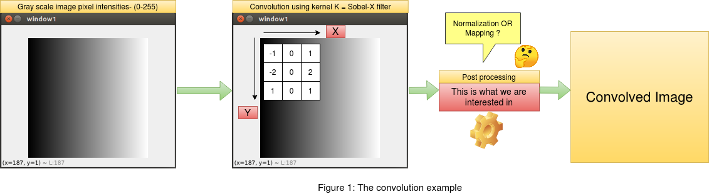
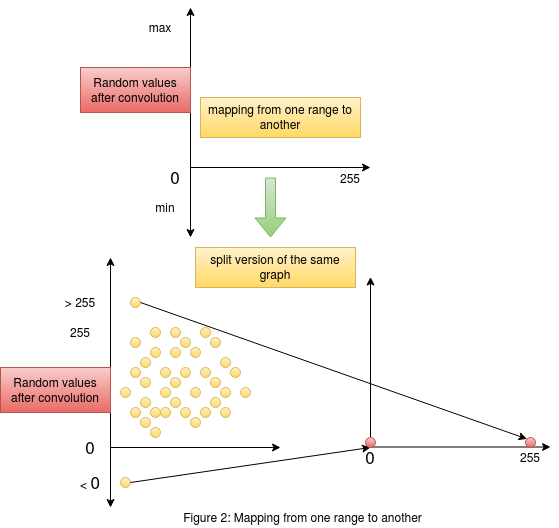

Information Conservation with Normalization
This post aims at understanding the conservation of information in a given number set in the range [min,max] after a certain mathematical operation has been performed on the corresponding set. We will consider an example of convolution on a gray scale image with pixel intensity range [0,255]. Suppose we perform a convolution using a kernel "K" on the image , the output of the convolution will have random values. In order to make sense of the convolved output , we need to some how relate these values to the original image. This is the step that we will explore in this post. At the end of this post we will understand how and why we apply normalization to conserve information and also be able to distinguish between mapping and normalization , as most of us have a misconception between the both. Click here to follow this article with the code.
 As mentioned in the introduction above , we will frame an example of convolution on an image and then apply the princliples of normalization to conserve the image pixel information in the convolved output. We will consider a gray scale image with values between [0,255] , where 0 marks the lowest and 255 marks the highest pixel intensity. For the convolution operation we will consider a sobel filter across "x" and "y" coordinates. Since the sobel filter is responsive to gradient change in pixel intensities across "x" and "y" directions, it becomes easy for us to see the changes in the output after convolution. We will also use the opencv library "cv2.filter2D" to convolve the image with our sobel filters. This will be useful to compare the outputs between the readily available opencv library for convolution and our implementation of the same. This article focuses only on the post processing after the convolution on the image and not the convolution itself.
1. THE MISCONCEPTION OF "MAPPING" IN POSTPROCESSING FOR PRESERVING INFORMATION
 Consider figure 2 on the right. This figure gives us an understanding of what is happening when we try and perform mappinng of values from one range to another. The graph on the top shows us the random values obtained after convolution in the "y" axis , and the "x" axis consists of the range [0,255] to which we want our convolved output mapped to. The same graph is split into two to see the actual mapping in action. We need to remember that the output values of convolution contains random values without any range. The mapping process considers the lowest element in the convolved output as the lower bound and the highest element as the higher bound. These values could be greater than 255 or less than 0. The mapping process simply maps the highest value in the random set of convolved output to the maximum of the required range (255) and similarly maps the lowest value in the random set of convolved output to the minimum of the required range (0). A point to remember here is that , this mapping could happen as a linear function or a non linear function map. As we see in the figure , it is hard to get a linear relation when the random points are negative.
 Consider figure 3 on the left. On the top we have the convolution between the kernel and the image. The target pixel is I5 in the image. The convolution is
performed as the average weighted sum of the image intensities , giving us the output convolved pixel intensity I5' . Now below in figure 3 , we must ask ourselves
this question , If we are performing a transformation on the pixel I5 to get I5' , then why do we need another transformation to take the output pixel intensity
I5' approximately back to I5 ? In fact , when we perform mapping this is exactly what is happening. The goal here is to preserve the changes that happened to the
original pixel intensity I5 after the convolution. That is we need to preserve the change |I5 - I5'| in the pixel , and also the resultant pixel intensity after post processing should be
in the range [0-255]. This cannot be achieved using mapping as we saw in this section. This can be solved by a two step normalization process which we will see below.
Consider figure 3 on the left. On the top we have the convolution between the kernel and the image. The target pixel is I5 in the image. The convolution is
performed as the average weighted sum of the image intensities , giving us the output convolved pixel intensity I5' . Now below in figure 3 , we must ask ourselves
this question , If we are performing a transformation on the pixel I5 to get I5' , then why do we need another transformation to take the output pixel intensity
I5' approximately back to I5 ? In fact , when we perform mapping this is exactly what is happening. The goal here is to preserve the changes that happened to the
original pixel intensity I5 after the convolution. That is we need to preserve the change |I5 - I5'| in the pixel , and also the resultant pixel intensity after post processing should be
in the range [0-255]. This cannot be achieved using mapping as we saw in this section. This can be solved by a two step normalization process which we will see below.
2. THE 2 STEP NORMALIZATION PROCESS FOR PRESERVING INFORMATION
 Now that we have understood why mapping doesn't preserve the information, we can now think about other methods to achieve our goal of preserving information.
Consider figure 4 , here we see the two step normalization process. On the left most end we have our convolved outputs who's range is random.
In the first step we clip all the values lesser than or greater than our required range. We know that our gray scale image is represented in the range [0,255] ,
thus we will clip off all values greater than 255 and make it equal to 255 , similarly all values lesser than 0 will be made equal to 0. By doing this we have not interfered
with the change that the original pixels have undergone and at the same time we have clipped those values which are out of the required range [0,255].
Now that we have understood why mapping doesn't preserve the information, we can now think about other methods to achieve our goal of preserving information.
Consider figure 4 , here we see the two step normalization process. On the left most end we have our convolved outputs who's range is random.
In the first step we clip all the values lesser than or greater than our required range. We know that our gray scale image is represented in the range [0,255] ,
thus we will clip off all values greater than 255 and make it equal to 255 , similarly all values lesser than 0 will be made equal to 0. By doing this we have not interfered
with the change that the original pixels have undergone and at the same time we have clipped those values which are out of the required range [0,255].
After the first step we now have a set of convolved outputs in the range [0,255]. In the next step of normalization , we will perform scaling to the range [0,1]. This kind of scaling to [0,1] from a higher range of [0,255] will help map large values into a constrained space , thus helping us preserve the values. This step of scaling down could be skipped in certain cases , but it is highly recommended to practice this in all problems as this ensures the intactness of the information/change in pixel intensities when we scale back the values from [0,1] to [0,255] by mutiplying by 255. This can be further supported by the way in which images are handled in python. Any operation on an image array will convert that corresponding output into floating point in python. Thus when we scale down from [0,255] to [0,1] , the operation is happening on floating point numbers (This preserves the information due to floating point accuracy). Now when we rescale it back to the range of [0,255] by multiplying it by 255 and then converting it to "uint8" format , which is the format in which the image is represented , we would have preserved the changes in the "uint8" format.
 The above image shows us the output of the convolved image using our custom method as mentioned in this post and also the method used by opencv on the side.
We see that both the methods have the same output. This is a very important bechmark as the above can be achieved by using just 3 lines of code instead of using the
opencv library for convolution and the skimage.exposure.rescale() for rescaling the values.
The above image shows us the output of the convolved image using our custom method as mentioned in this post and also the method used by opencv on the side.
We see that both the methods have the same output. This is a very important bechmark as the above can be achieved by using just 3 lines of code instead of using the
opencv library for convolution and the skimage.exposure.rescale() for rescaling the values.